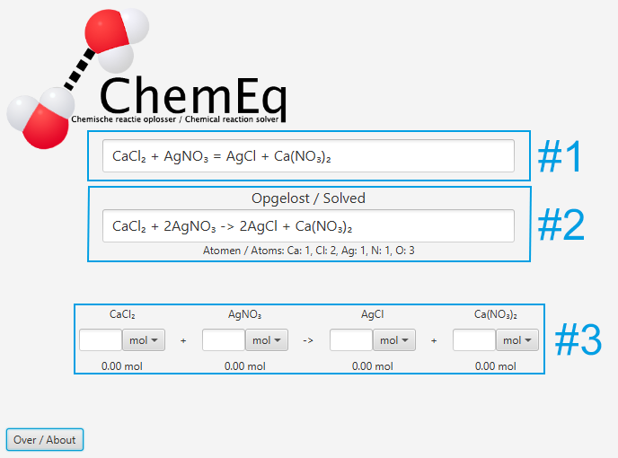

ChemEq
ChemEq is een software programma gemaakt door Bram Stout voor zijn PWS.
Met dit programma kunt u reactievergelijkingen oplossen en berekenen hoeveel u van een stof nodig heeft of krijgt na de reactie.
Gebruikershandleiding.
Het venster is op te delen in drie vakken.

Vak #1 is het invoervak voor de reactievergelijking. Een geldige reactievergelijking is opgedeeld in twee groepen doormiddel van een pijl:
De moleculen aan de linkerkant van de pijl, de beginstoffen, en de moleculen aan de rechterkant van de pijl, de reactieproducten.
De pijl, die deze groepen opdeelt, kan een '=' teken zijn of de combinatie '->'.
Elke groep is verder opgedeeld in moleculen doormiddel van een '+' teken.
Elk molecuul bestaat uit atomen. Elke hoofdletter wordt gezien als een nieuw atoom, met de kleine letters daaraan toegevoegd.
Een atoom kan ook eindigen met een getal. Dit getal is het indexcijfer van het atoom in het molecuul, en geeft aan hoeveel van dat type atoom in het molecuul zitten.
Het is mogelijk om atomen te groeperen in een molecuul. Dit wordt gedaan door haakjes, '(' en ')', om de groep atomen neer te zetten. Een groep atomen kan ook een indexcijfer hebben.
Een molecuul kan ook eindigen met een lading. Deze lading wordt aangegeven met een '+' of een '-' teken gevolgd door een getal.
Als het plus- of minteken achter het getal komt te staan, zal het programma het niet lezen als een lading.
Dit is tegen de normale conventie, maar het komt door de limitaties van de parser.
Een molecuul kan ook beginnen met een getal. Dit getal is het coëfficiënt van het molecuul, en geeft aan hoeveel van die moleculen u hebt.
Het programma probeert natuurlijk deze coëfficiënten te berekenen, maar het is mogelijk om zelf een coëfficiënt in te voeren,
en dan probeert het programma de overige coëfficiënten te berekenen. Vanwege de manier hoe het programma werkt, zal niet altijd een correct antwoord ontstaan,
als u zelf een coëfficiënt invoert.
Vak #2 is het resultatenvak. Hier komt de reactievergelijking te staan, maar dan opgelost. Het gebruikt dezelfde conventies voor het noteren van reactievergelijkingen
als bij het invoervak, Vak #1. Als u op het resultatenvak klikt, dan wordt de inhoud van het resultatenvak in uw klembord geplakt. Het resultatenvak is zelf niet te bewerken.
Vak #3 is het mengvat. Hier kunt u aangeven hoeveel u van een bepaalde stof hebt of wilt, en de overige stoffen worden uitberekend.
Zijn er bij meerdere moleculen hoeveelheden aangegeven, dan berekent het programma de hoeveelheid stof die dan maximaal te maken is.
Het mengvat is opgedeeld in kolommen. Elke kolom is voor één molecuul, en bestaat uit een paar objecten.
Bovenaan staat welk molecuul het is. In het midden kunt u aangeven hoeveel stof u heeft als een getal (karakters die geen cijfers, punten of komma's zijn mogen niet worden ingevoerd),
en welke eenheid u wilt gebruiken. Onderaan staat het resultaat van de berekening.
Hoe werkt het.
Parsen.
De parser is een stuk code in het programma die de tekst uit het invoervak, omzet naar een andere vorm dat het programma beter kan gebruiken.
Hij gaat karakter voor karakter langs de hele tekst heen. Als de parser een hoofdletter tegenkomt, dan ziet hij dat als een nieuw atoom.
Vindt hij een spatie en/of een '+' teken, dan ziet hij dat als een nieuw molecuul. Ziet hij na een spatie of een '+' teken een getal,
dan ziet hij dat als een coëfficiënt. Ziet hij na letters, die een atoom vormen, een getal, dan ziet hij dat als een indexcijfer. Ziet hij een '+' of een '-' teken
na een molecuul met daar achter een getal (niet gevolgd door een letter), een spatie of nog een '+', '-' of '=' teken, dan is het een lading.
Vindt hij een '=' of een '-' teken, en het is geen lading, dan ziet hij dat als het einde van de linker kant van de reactievergelijking, en gaat hij nu bezig
met de rechterkant van de reactievergelijking.
Oplossen.
Wanneer de parser de invoer heeft omgezet naar iets waar wij mee kunnen werken, moeten wij het oplossen. Het principe waar de solver (de naam voor een stuk code die iets oplost)
zich op berust, is dat aan de linkerkant er dezelfde atomen met dezelfde hoeveelheden moeten zijn. Er worden geen atomen aangemaakt of vernietigt.
Hierdoor kunnen wij makkelijk voor elk type atoom een vergelijking opstellen. Om beter te laten zien hoe de solver werkt, is er een voorbeeld.
CaCl₂ + AgNO₃ = AgCl + Ca(NO₃)₂
De coëfficiënten, die wij moeten berekenen, kunnen wij vervangen met een variabel.
aCaCl₂ + bAgNO₃ = cAgCl + dCa(NO₃)₂
Aan beide kanten moeten er evenveel van dezelfde atoomsoorten zijn. Dus maken wij voor elk atoomsoort een vergelijking. Voor calcium ziet het er zo uit:
a∗1 + b∗0 = c∗0 + d∗1
In het eerste molecuul zit één calcium atoom. In het tweede molecuul zitten er geen. In het derde molecuul zitten er geen. In het vierde molecuul zit één calcium atoom.
Dit is te versimpelen naar:
a = d
Door dit ook te doen voor alle andere atoomsoorten, krijgen wij de volgende vergelijkingen.
a = d
a∗2 = c∗1
b∗1 = c∗1
b∗1 = d∗2
b∗3 = d∗6
Nu moeten wij ergens beginnen om deze vergelijkingen op te lossen. Dit doen wij door één van de variabelen gelijk te stellen aan 1,0.
Welk variabel wij kiezen, is belangrijk. Het variabel moet er dan voor zorgen dat wij de andere vergelijkingen ook kunnen oplossen.
Dus kijken wij naar welke vergelijking maar één variabel aan beide kanten heeft. Hierdoor hebben wij direct twee variabelen bekend,
en zouden alle andere vergelijkingen direct of indirect ook oplosbaar moeten zijn. In de praktijk werkt dit altijd, maar het kan zijn,
dat bij een paar reactievergelijkingen hij hier vast komt te zitten. Aangezien dit niet of nauwelijks voorkomt, gebruiken wij deze methode.
Het variabel a is een mogelijke keuze, dus nemen wij a. Als a 1,0 is, dan krijgen wij het volgende.
1 = d
1∗2 = c∗1
b∗1 = c∗1
b∗1 = d∗2
b∗3 = d∗6
Nu weten wij a en d. Wij lossen dit nog een keer op.
1 = d
2 = c
b = 2
b = 2
b = 2
Nu weten wij ook b en c, en weten wij dus alle coëfficiënten. De stap, van de vergelijkingen die wij direct kunnen oplossen, op te lossen,
herhalen wij telkens totdat alles is opgelost of totdat wij het zo vaak hebben geprobeerd, dat wij maar opgeven.
Het kan nog wel zijn, dat er nog moleculen over zijn die niet gerelateerd waren aan de rest van de moleculen, of moleculen die juist elektronen overdraagt.
Dus wij gaan langs alle vergelijkingen die niet opgelost zijn. Als de vergelijking aan beide kanten meer dan één variabel heeft, dan kunnen wij het niet oplossen.
In de praktijk gebeurd het niet dat er meerdere variabelen zijn in de vergelijkingen die niet opgelost zijn. Daarna kijken wij naar de ladingen. Als de ladingen gelijk zijn,
dan zijn beide variabelen gewoon 1,0. Als de ladingen niet gelijk zijn, dan kijken wij naar het verschil in ladingen. De ladingen aan beide kanten van de reactievergelijking verschilt.
Dus moeten wij het verschil opheffen. Hier gebruiken wij de volgende vergelijking voor.
factor(chargeA - chargeB) = chargesRight - chargesLeft
Waar
factor de coëfficiënten van beide moleculen is,
chargeA de lading van het linker molecuul is,
chargeB de lading van het rechter molecuul is,
chargesLeft alle ladingen van de linker kant opgeteld is,
chargesRight alle ladingen van de rechter kant opgeteld is.
Wij weten allen behalve factor, dus kunnen wij die makkelijk berekenen. Als wij dat hebben gedaan, slaan wij die coëfficiënten op.
De coëfficiënten zijn nu allemaal bekend, maar het zijn kommagetallen en wij willen hele getalen. Dus wij moeten een getal vinden waar wij mee kunnen vermenigvuldigen
om zo een heel getal te krijgen. Hiervoor gebruiken wij een bestaand algoritme om de laagste gemeenschappelijke veelvoud (Lowest Common Multiple, LCM) te berekenen.
Hiermee vermenigvuldigen wij alles, en dan zijn wij klaar.
Mengvat.
Bij het mengvat kunt u aangeven hoeveel van een stof u heeft of wilt. Het is de taak van het mengvat om de overige waardes te berekenen.
Dit wordt gedaan doormiddel van de molverhouding. Eerst deelt u door de coëfficiënt van het huidige molecuul, en daarna vermenigvuldigt u met de coëfficiënt van het
gewenste molecuul. Deze stap wordt herhaald voor elke overige waarde. Het probleem nu, is dat als er meerdere waardes al zijn ingevuld, moeten wij bepalen welke waarde
wij gaan gebruiken om de overige waardes te berekenen. Hiervoor nemen wij de kleinste waarde, want wij willen weten wat de grootste hoeveelheid is die wij zouden
kunnen maken, en daarbij kan het zijn dat er een stof in overmaat aanwezig is. Hiervoor kiezen wij het kleinste getal, nadat wij elke ingevulde waarde door zijn
coëfficiënt hebben gedeeld. Nu wij de kleinste hoeveelheid hebben, vermenigvuldigen wij deze waarde met de coëfficiënt van elk molecuul om de andere waardes te berekenen.
De ingevulde waardes kunnen ook in grammen of kilogrammen zijn. Deze worden dan eerst naar mol omgezet, doormiddel van het de delen door de moleculaire massa van het molecuul.
Licentie.
MIT License
Copyright (c) 2017 Bram Stout
Permission is hereby granted, free of charge, to any person obtaining a copy
of this software and associated documentation files (the "Software"), to deal
in the Software without restriction, including without limitation the rights
to use, copy, modify, merge, publish, distribute, sublicense, and/or sell
copies of the Software, and to permit persons to whom the Software is
furnished to do so, subject to the following conditions:
The above copyright notice and this permission notice shall be included in all
copies or substantial portions of the Software.
THE SOFTWARE IS PROVIDED "AS IS", WITHOUT WARRANTY OF ANY KIND, EXPRESS OR
IMPLIED, INCLUDING BUT NOT LIMITED TO THE WARRANTIES OF MERCHANTABILITY,
FITNESS FOR A PARTICULAR PURPOSE AND NONINFRINGEMENT. IN NO EVENT SHALL THE
AUTHORS OR COPYRIGHT HOLDERS BE LIABLE FOR ANY CLAIM, DAMAGES OR OTHER
LIABILITY, WHETHER IN AN ACTION OF CONTRACT, TORT OR OTHERWISE, ARISING FROM,
OUT OF OR IN CONNECTION WITH THE SOFTWARE OR THE USE OR OTHER DEALINGS IN THE
SOFTWARE.